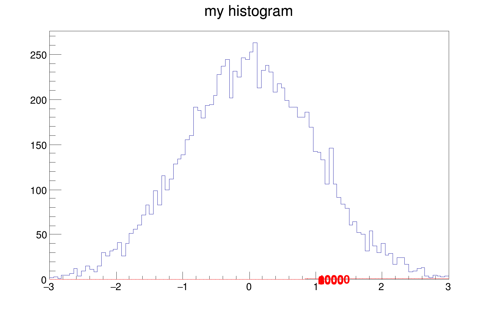

Example of macro illustrating how to superimpose two histograms with different scales in the "same" pad.
Example of macro illustrating how to superimpose two histograms with different scales in the "same" pad.
Inspired by work of Rene Brun.

import ROOT
c1 = ROOT.TCanvas("c1","hists with different scales",600,400)
ROOT.gStyle.SetOptStat(False)
h1 = ROOT.TH1F("h1","my histogram",100,-3,3)
for i in range(10000) :
h1.Fill(ROOT.gRandom.Gaus(0,1))
h1.Draw()
hint1 = ROOT.TH1F("hint1","h1 bins integral",100,-3,3)
sum = 0
for i in range(1,101) :
sum += h1.GetBinContent(i)
hint1.SetBinContent(i,sum)
rightmax = 1.1*hint1.GetMaximum();
scale = ROOT.gPad.GetUymax()/rightmax;
hint1.SetLineColor(ROOT.kRed)
hint1.Scale(scale)
hint1.Draw("same")
axis = ROOT.TGaxis(ROOT.gPad.GetUxmax(),ROOT.gPad.GetUymin(),
ROOT.gPad.GetUxmax(), ROOT.gPad.GetUymax(),0,rightmax,510,"+L")
axis.SetLineColor(ROOT.kRed)
axis.SetLabelColor(ROOT.kRed)
axis.Draw()
- Author
- Alberto Ferro
Definition in file twoscales.py.

 ROOT 6.18/03 - Reference Guide Generated on Thu Aug 29 2019 04:10:16 (GVA Time) using Doxygen 1.8.14.
ROOT 6.18/03 - Reference Guide Generated on Thu Aug 29 2019 04:10:16 (GVA Time) using Doxygen 1.8.14.